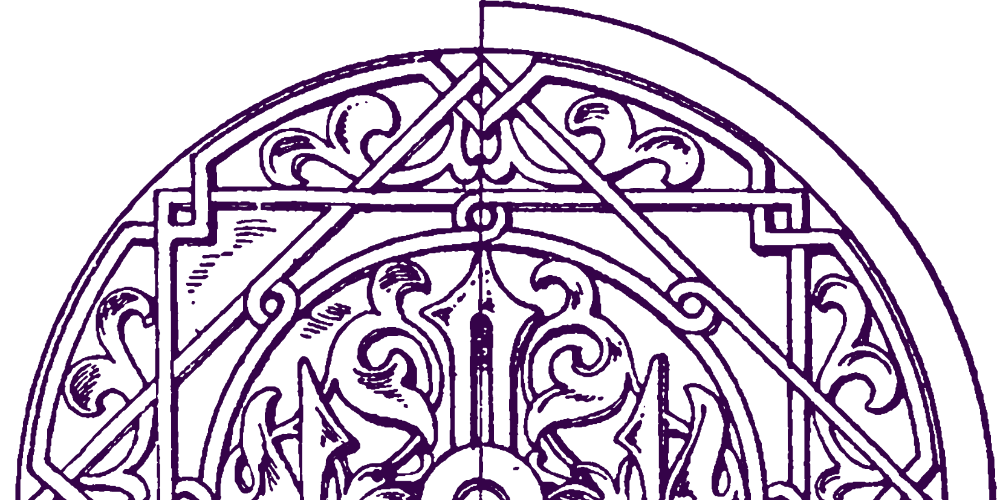

Au programme
B.WILEY
Rock Metal

Originaire du Nord, B.Wiley se compose de 5 musiciens issus de formations reconnues de la scène musicale locale (Lopsided, Dadabovic...) avec lesquels ils ont fait de nombreux concerts, partageant l'affiche avec plusieurs valeurs sûres de la scène rock-métal française (Headcharger, Hacride, Klone...). Le groupe puise ses influences dans le rock et le métal des années 90 à nos jours et propose un rock énergique et inventif aux mélodies sombres et ciselées. Après plusieurs mois de travail, B.Wiley a mis en ligne une première série de morceaux autoproduits debut 2023. Pour accompagner cette diffusion, le groupe reprend les chemins de la scène avec un nouveau set puissant qu'il viendra interpréter sur les scènes de festivals et lors de concerts dans toute la région des Hauts de France et en Belgique au premier semestre 2023.
BLACK HAZARD
Heavy Rock
Black hazard est un groupe de heavy rock stoner originaire du cambrèsis dans les Hauts-de-France. La formation se compose de 4 potes : Tom à la guitare lead, Antoine à la basse, Ludo au chant et Julien à la batterie. La formation existe depuis 2021, en sortie de 1er confinement. Depuis ses débuts, Black Hazard a un objectif très clair : envoyer des riffs bien lourds et incisifs accompagnés d'une rythmique à la fois puissante et groovy. Le groupe souhaite parfaire l'écoute de ses auditeurs grâce à l'énorme présence de son frontman (qui se consacre à 100% au chant en anglais) mais également via l'exécution, à la fois démente et efficace, des solos de son lead. 2023, les 4 potes décident d'enregistrer leur premier album 11 titres : Burning Paradise.
FOOL'S PARADISE
Heavy Metal Progressif
Fool's Paradise s'adresse aux amateurs d'un Heavy Metal Progressif foisonnant de riffs mais dans lequel la technique reste au service de la mélodie. Parmi les inspirations de ses membres figurent des groupes tels que Dream Theater, Symphony X, Paradise Lost, Iron Maiden ou Metallica. Au programme, un chant clair et puissant, des duels de guitares parfois épiques et des cavalcades de basse, le tout soutenu par une batterie énergique. Les thèmes abordés dans les paroles sont en lien avec les dérives de la société qui nous entoure et les conséquences psychologiques qui en découlent pour chacun de nous
MR.MYST
Heavy Rock
Originaire du Nord, B.Wiley se compose de 5 musiciens issus de formations reconnues de la scène musicale locale (Lopsided, Dadabovic...) avec lesquels ils ont fait de nombreux concerts, partageant l'affiche avec plusieurs valeurs sûres de la scène rock-métal française (Headcharger, Hacride, Klone...). Le groupe puise ses influences dans le rock et le métal des années 90 à nos jours et propose un rock énergique et inventif aux mélodies sombres et ciselées. Après plusieurs mois de travail, B.Wiley a mis en ligne une première série de morceaux autoproduits debut 2023. Pour accompagner cette diffusion, le groupe reprend les chemins de la scène avec un nouveau set puissant qu'il viendra interpréter sur les scènes de festivals et lors de concerts dans toute la région des Hauts de France et en Belgique au premier semestre 2023.
RACHEZEIT
Tribute Rammstein
« Rachezeit » est un hommage au célèbre groupe allemand Rammstein. En français, Rachezeit, c’est « le temps de la revanche ». Le groupe vient des Hauts de France, une région qui a donné son âme de charbon à l’industrie et la métallurgie. Les cinq membres, eux, donnent leur âme au Métal Industriel de Rammstein. Pour leur plaisir, bien sûr. Mais aussi en guise de revanche sur les aléas de la vie.... Pierre-Antoine est à la guitare rythmique et à la gestion MAO. La fougue et la passion. Fabrice est notre bassiste, en alternance avec Christophe, carrures à la mesure du son de basse, énormes expériences. Jérémy, batteur, ex pro, connait par cœur la « sphère métal » dont il est un noyau radioactif. Evanchko, c’est le front man, venu de Lorraine construire sa vie dans le Nord. Le chant comme un cri de hargne. Le fondateur du groupe, c’est Angelo Di Luciano, qui tient la guitare lead, (ex Sentinhell), et qui a écumé les scènes de France et d’ailleurs depuis 30 ans. Fabrice est également l’ingé son du groupe, qui traine ses guêtres sur les scènes du Nord depuis longtemps. RACHEZEIT a depuis 2 ans écumé les scènes en France et en Belgique avec à chaque fois un enthousiasme significatif du public rammsteinien qui lui reconnaît sa fidélité musicale envers Rammstein. Tschüss , und bis bald auf der Bühne!!
